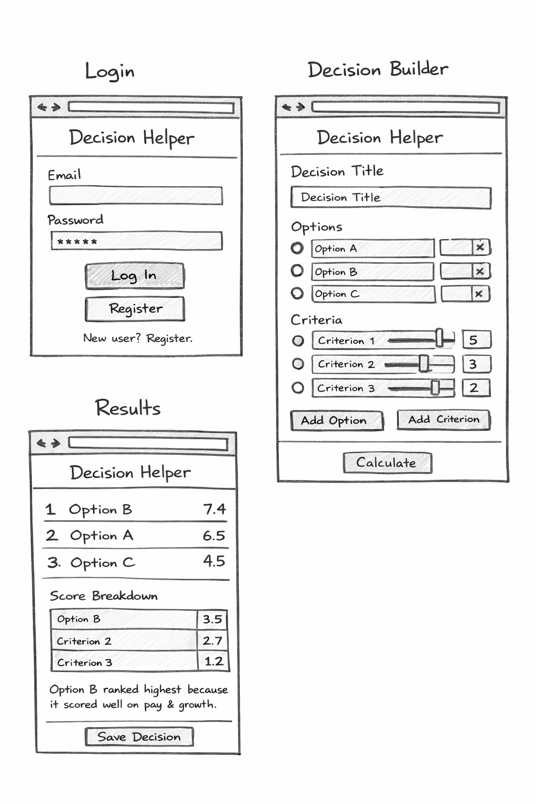

About Decision Helper
A simple decision tool that reduces stress by forcing clarity.
Decision Helper is a web application meant to assist in decision-making and reduce stress by helping break down choices into options, criteria, and weighted priorities.
How It Works
Users define their options, specify relevant criteria and assign them priority, then receive a ranked recommendation based off of the weighted scores.
Example Image

External Data (3rd-party API placeholder)
This section will eventually display the data retrieved from a third-party API: possibly productivity tips, decision-making quotes, or contextual data to assist users.